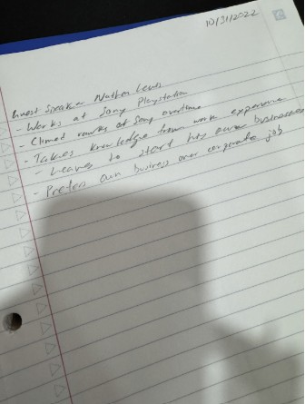
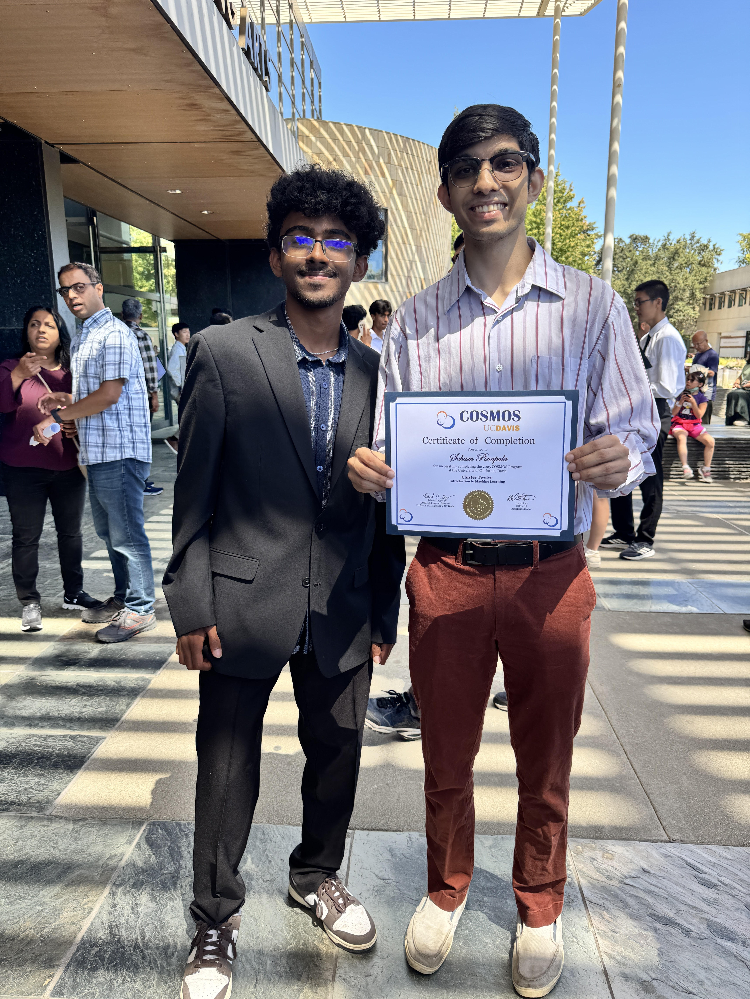

Career Exploration
Below are reflections from the guest speakers I have had the opportunity to hear from during my time in the Engineering Academy.
Guest Speaker 1: Todd Farrell

The guest speaker delivered an engaging presentation on artificial intelligence, focusing on its limitations and how it can be manipulated. He demonstrated this through gandalf.lakera.ai, a platform designed to show how AI models can be tricked into operating beyond their intended parameters. It was eye-opening to see that even advanced AI systems are vulnerable to manipulation. His presentation emphasized the importance of responsible development and strong safeguards to prevent misuse, while also highlighting that AI still has significant flaws that must be carefully addressed.
Guest Speaker 2: BSK Guest Speaker

The guest speaker from BSK Associates, an engineering consulting firm, came to speak to our class about what they do in the real world as engineers. The speaker gave us examples of some of the things they do, including checking the ground to ensure proper construction and ensuring safety standards. I found it interesting to learn about all the teamwork and problem-solving involved with this type of job, and how it directly affects structures used every day. The presentation gave me a greater understanding of what engineering consulting is and all the different avenues within this field.
Guest Speaker 3: Jaiyi Li

Company/Field: Uber
This guest speaker came on call to give us advice on what a job like uber worked like behind the scenes. Behind the app and the drivers there are real people working on request, digital security and managing the information of millions of users around the world all at once. Ms. Li gave us an idea of what her day to day work life is like.
Guest Speaker 4: Nathan Lewis

Company/Field: Sony - Playstation
Mr. Lewis worked at Sony for a few years before embarking on his career journey. He gave us insight how to solidify a position at a company and make a name for yourself with your bosses. He also went into how he climbed the ranks at Sony becoming a highly responsible operations manager.
Guest Speaker 5: Brain Ng
Company/Field: Uber
Mr. Ng is a marketing executive that worked and Safeway, Del Monte, and JM Smucker to teach us about the business side of products. He taught us about why product launches tend to fail, what product and marketing teams miss during launches, and why they misudnerstand the demand they are trying to meet. He told us that it is priority number one to understand that customers always come first and that there is a lot more that goes into account besides having a good idea.
Career Exploration Research Program
COSMOS UC Davis

I also participated in a program at UC Davis called COSMOS, a rigorous summer program emphasizing learning at an advanced STEM level. During my experience at COSMOS, I had the opportunity to explore sophisticated ideas within computer science and engineering. I gained practical experience with real-world applications within computer science. I also had the opportunity to work on challenging projects with my peers, improving my problem-solving, coding, and analytical skills. I learned about sophisticated ideas within computer science, including machine learning and algorithm design. I gained a better understanding of my possible career paths within computer science. I improved my ability to think critically and work effectively as a team.
Self-Evaluation: https://docs.google.com/document/d/1hWYSfofW455D_EzkuyEaQUTj_Pbd4ZXVH9dlJoNbraY/edit?tab=t.0